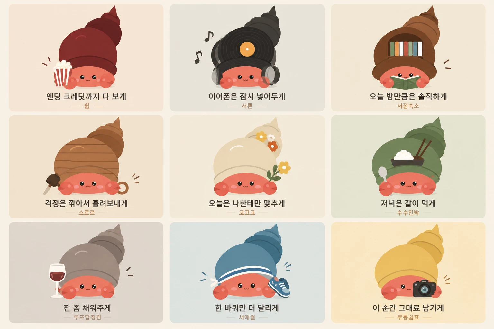

소라게 캐릭터 SVG 검수
왼쪽은 원본 시안(래스터), 오른쪽은 제작한 SVG입니다. 두 쪽 모두 원본과 같은 축척이라 크기 · 위치를 바로 비교할 수 있습니다. 확대하면 원본은 흐려지고 SVG는 선명하게 유지됩니다.
원본 시안

왼쪽은 원본 시안(래스터), 오른쪽은 제작한 SVG입니다. 두 쪽 모두 원본과 같은 축척이라 크기 · 위치를 바로 비교할 수 있습니다. 확대하면 원본은 흐려지고 SVG는 선명하게 유지됩니다.
